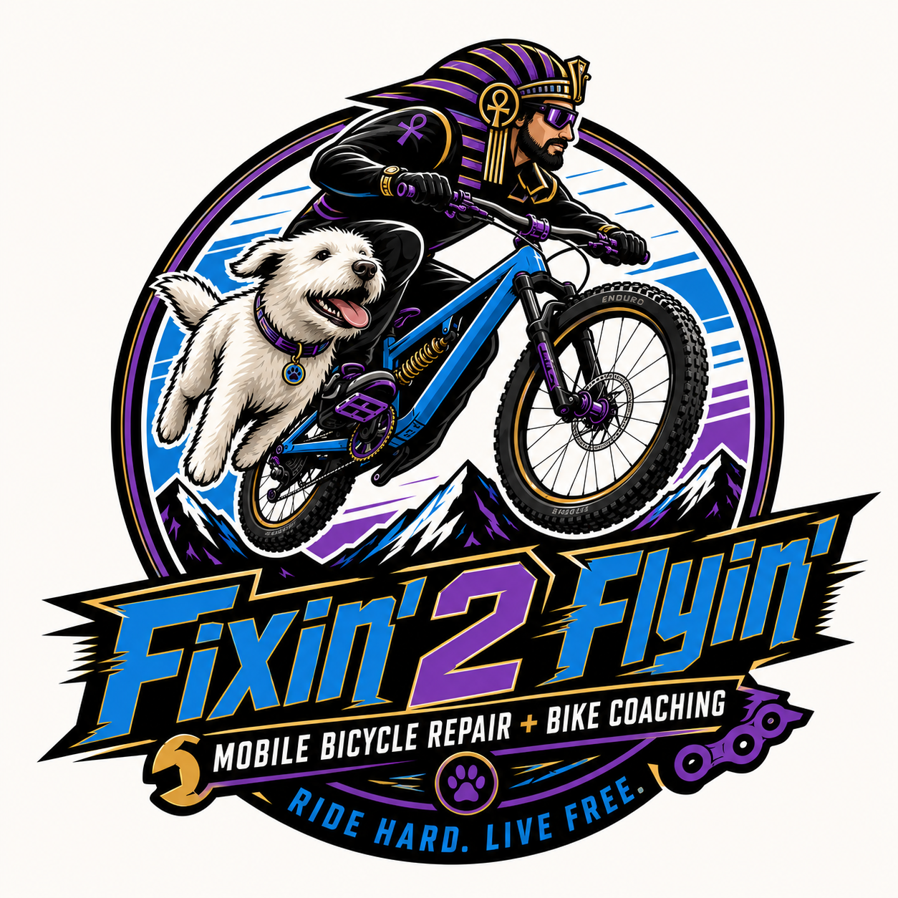
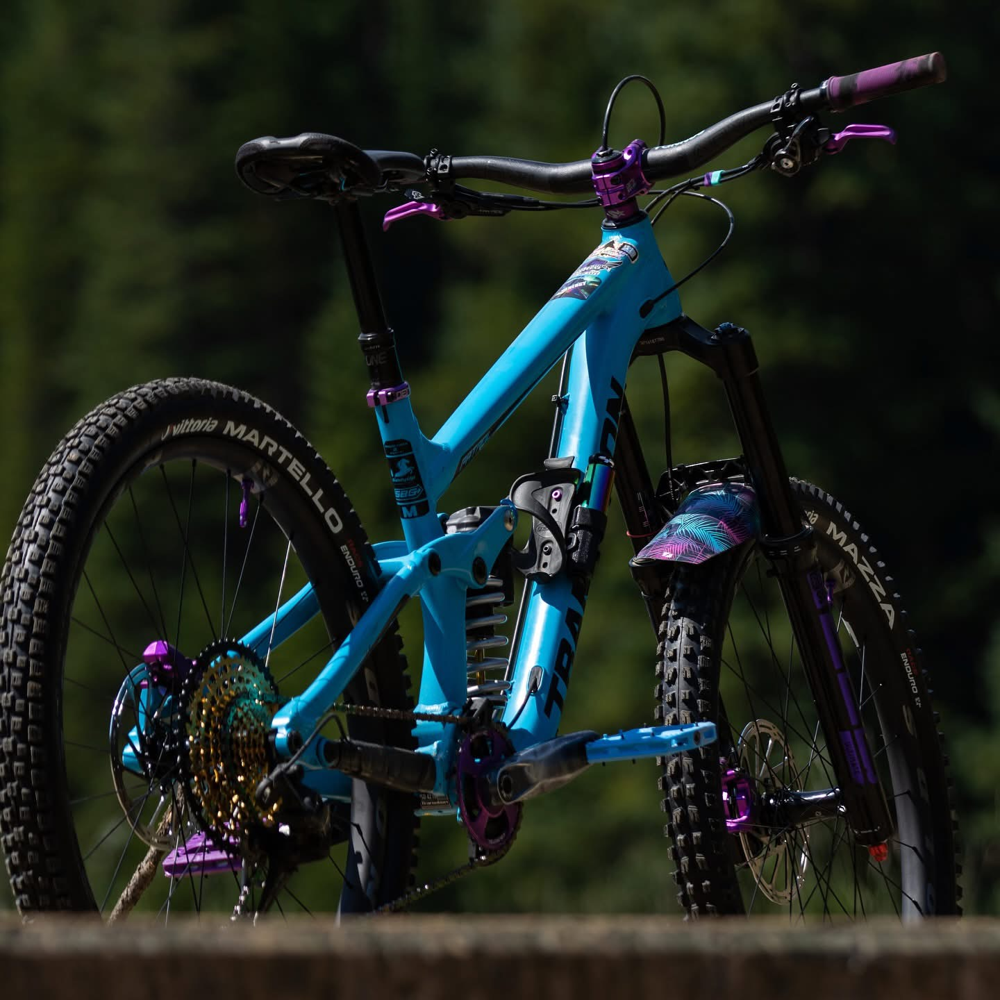
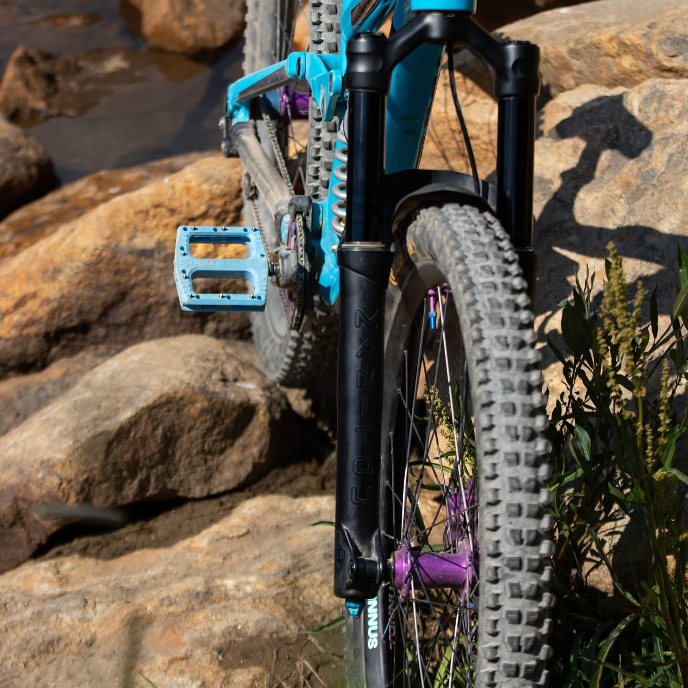
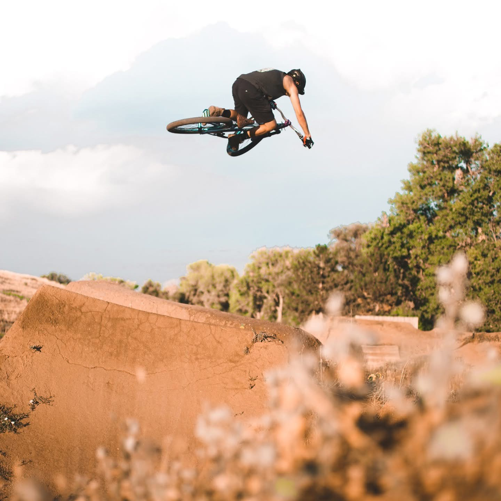
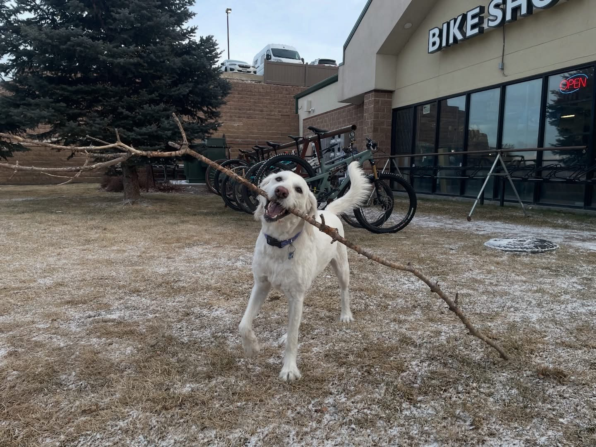
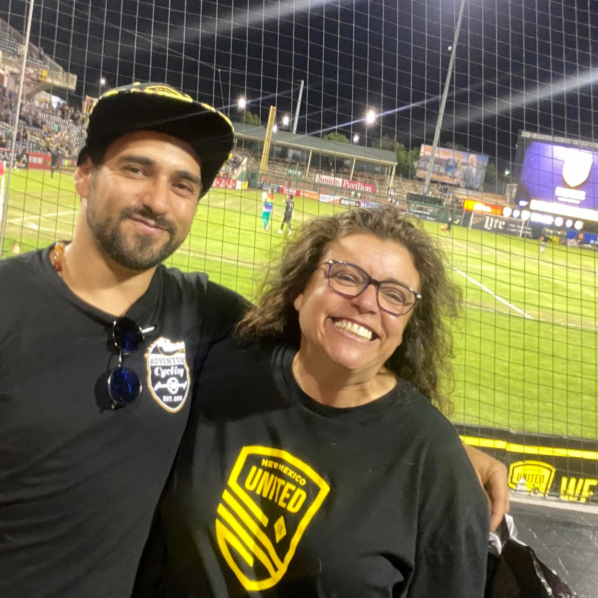
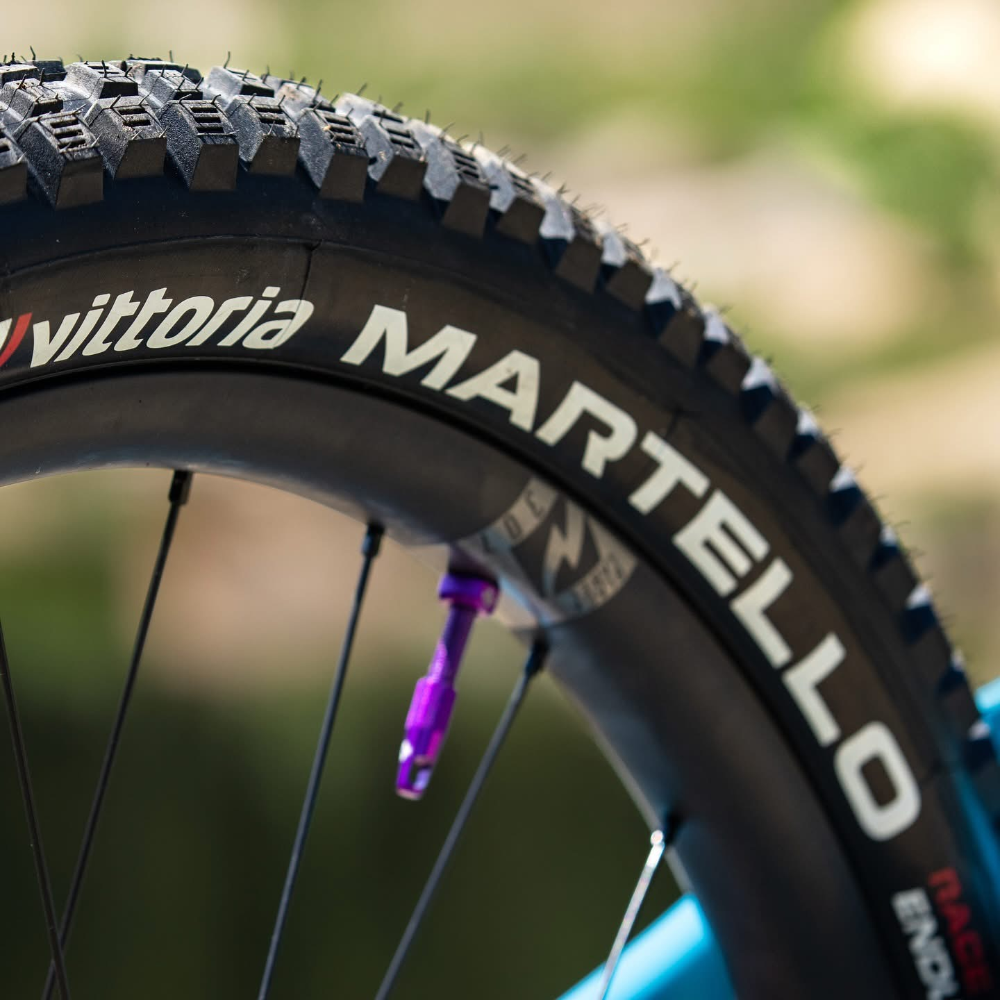

Mobile Bike Repair
On-site bicycle fixes, tune-ups, adjustments, and maintenance.

Fixin’ 2 Flyin’MOUNTAINS. VAN. BIKE. LUMI.
Dom is a hardcore bicycle rider who lives for wild trails, mountain air, van life, and every adventure possible with Lumi by his side.
From fixing 2 flying.
Fixin’ 2 Flyin’ is a mobile bike repair and coaching service built for riders who want to ride better, safer, and stronger. Dom brings bicycle repair, tune-ups, trail prep, and real-world riding guidance directly to you.

Dom provides mobile bicycle repair, tune-ups, basic maintenance, trail-ready fixes, and one-on-one bike coaching. His service is built for riders who want their bikes running smooth and their skills improving without the hassle of hauling everything to a shop.
On-site bicycle fixes, tune-ups, adjustments, and maintenance.
Safety checks before rides, routes, or mountain trips.
Tire/tube repair and replacement support.
Basic brake tuning, shifting adjustments, and ride checks.
One-on-one riding help for confidence, climbing, handling, and trail skills.
Help preparing for longer rides, mountain routes, or bike adventures.
Built around motion

Long climbs, fast descents, remote trails, and rides that test the body and clear the mind.

Bike prep, clean setups, tire checks, component checks, and ride-ready confidence.

Real-world guidance for handling, control, jumping, confidence, and trail progression.

Lumi’s Trail Moments
Lumi is the co-pilot, trail buddy, road companion, and heart of every adventure. She belongs in Dom’s story because she is part of the ride, the road, the shop, the basecamp, and every get-ready moment.

Dom and his mama — a tribute to love, laughter, and the spirit that shaped him.
For Dom’s Mama
A tribute to Dom’s mama — the woman who helped shape his strength, fun-loving spirit, wild heart, and drive.
Dom’s ride is about more than bikes, trails, mountains, and motion. It is also about the people who helped shape who he is. His mama is part of that story — the love, laughter, strength, and spirit behind so much of what makes Dom who he is today.
This section is dedicated to Dom’s mama with love, gratitude, and honor. Her warmth, support, and joyful energy helped shape his adventurous heart and the way he moves through life. From the fun side of his spirit to the deeper strength behind his drive, her influence is part of every mile.
A little about Dom
Dom lives for the mountains, the bike, the open road, and the freedom that comes from building life around motion. Whether it is a solo push, flips, a new trail, coaching, fixing up bikes, a van trip, or a day outside with Lumi, the goal is simple: get outside, keep moving, and live fully.
Dom in Motion
Watch Dom ride, progress, and bring the Fixin’ 2 Flyin’ energy to life — from the trails to the air.
Gallery

Ready to ride?
Contact Dom for mobile bicycle repair, bike coaching, trail prep, or help getting ride ready.
Replace dom@example.com with Dom’s real email before publishing.